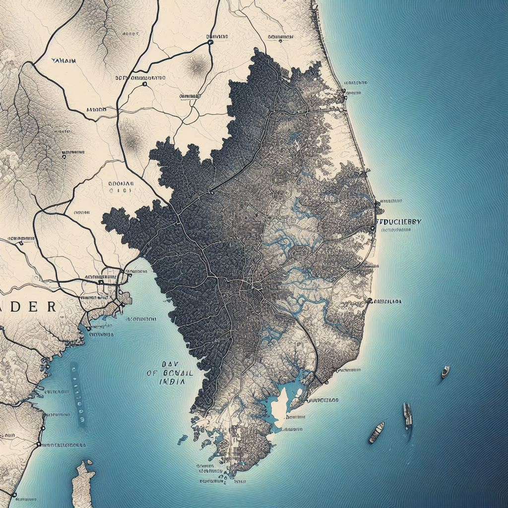

Puducherry, also known as
Pondicherry, is a Union Territory located on the southeastern coast of India, along
the
Bay of Bengal. It is one of the few regions in India that has a distinct colonial past, primarily
influenced by French colonial rule, which still reflects in its architecture, culture, and heritage.
Geographical Location Details:
- Latitude and Longitude:
Puducherry lies between 11.94°N latitude and 79.83°E longitude.
- Coastal Position:
It is situated on the eastern coastline of India, with a long coastline along the Bay of Bengal, making it a
coastal region. The city of Puducherry is located about 160 kilometers south of Chennai, the
capital city of Tamil Nadu.
- Neighboring States:
Puducherry is surrounded by the state of Tamil Nadu on all sides except the coast. While Puducherry
is geographically located in Tamil Nadu, it is a separate Union Territory administered directly by the
central government of India.
- Division into Four Districts:
The Union Territory of Puducherry is divided into four districts:
- Puducherry (the capital city and main district)
- Karaikal (on the southeastern coast of Tamil Nadu)
- Mahe (on the western coast of India, surrounded by Kerala)
- Yanam (on the eastern coast, surrounded by Andhra Pradesh)

Topography and Terrain:
- Flat Terrain: The region is predominantly flat, with a few low-lying hills along the
coast. The area is known for its gentle slopes and fertile soil, which support agriculture.
- Climate: Puducherry experiences a tropical climate, characterized by high humidity and
moderate temperatures throughout the year. The region has distinct wet and dry seasons, with monsoons from
June to September bringing heavy rainfall.
- Natural Features:
- Beaches: Puducherry is famous for its beautiful beaches, like Promenade Beach,
Serenity Beach, and Auroville Beach, which are popular for their peaceful environment and
scenic views of the Bay of Bengal.
- Rivers: The Gangeswari River and the Ponnaiyar River are the two main rivers in
Puducherry. These rivers play a significant role in the region's agricultural and ecological landscape.
Connectivity:
- By Road: It is connected to major cities like Chennai (160 km away),
Bangalore (320 km away), and Cuddalore (24 km away) via an extensive network of highways.
- By Rail: Puducherry has a railway station with connections to major cities in Tamil Nadu
and other parts of India.
- By Air: The nearest airport is in Chennai, about 160 km away, though there is also
a small airport in Puducherry with limited flights.
Flora and Fauna:
The coastal region of Puducherry supports a diverse range of plant and animal life, including mangroves,
tropical trees, and a variety of bird species. The area's rich biodiversity makes it an important location for
eco-tourism.
In summary, Puducherry’s geographic location along the Bay of Bengal, surrounded by Tamil Nadu and with a rich
colonial history, makes it a unique blend of cultural influences, with a charming coastal environment. Its
accessibility by road, rail, and air further enhances its appeal as a popular tourist destination.